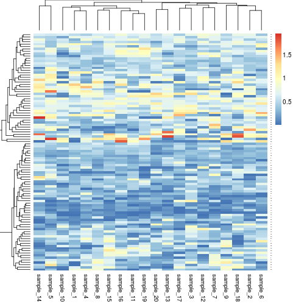
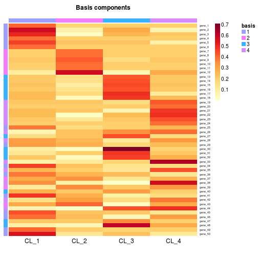
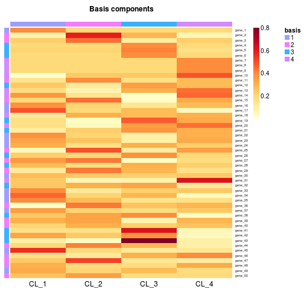

rmix(x, n = 100, p = 20, markers = ceiling(nrow(x)/20), min = 0, max = 20, mfold = 2,
alpha = 1, snoise = list(mean = 0, sd = 0.05), gnoise = list(shape = 5, scale = 1),
...)
markers must be missing.x specifies the number of signatures.
If x is provided as a matrix, then n is
used to subset it (x[n, ]) before simulating the
global expression data.enforceMarkers. Markers
enforcement may be disabled with markers=NA.rdirichlet.x + N(\mu,
\sigma).e_{ij} + N(0, 1/\gamma_i).an ExpressionMix-class object, that
contains the true underlying signatures and proportions
stored as an NMF model.
The function rmix generates an
ExpressionMix-class object, composed of a
given number of underlying cell types. The amount of
noise added to both the cell-specific signatures and the
global expression values is customisable.
# 3 cell types, 100 features, 20 samplesrmix(3, 100, 20)ExpressionMix (storageMode: lockedEnvironment) assayData: 100 features, 20 samples element names: exprs protocolData: none phenoData: none featureData: none experimentData: use 'experimentData(object)' Annotation: Composition: 'CL_1', 'CL_2', 'CL_3' (3 total)# from known signature matrixs <- rmatrix(100, 5)x <- rmix(s, p=20)dim(x)Features Samples Components 100 20 5if( !isCRAN_timing() ){ aheatmap(x) }
# markers are enforced on each true signaturex <- rmix(4, 50, 20, markers=6)if( !isCRAN_timing() ){ basismap(x, Rowv=NA) }
# or alsox <- rmix(1:4, 50, 20)if( !isCRAN_timing() ){ basismap(x, Rowv=NA) }